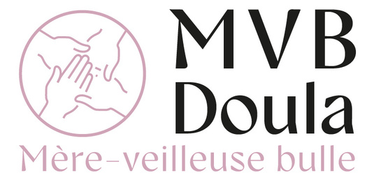
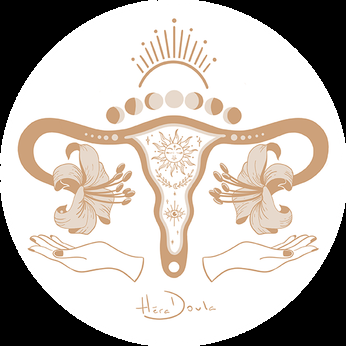
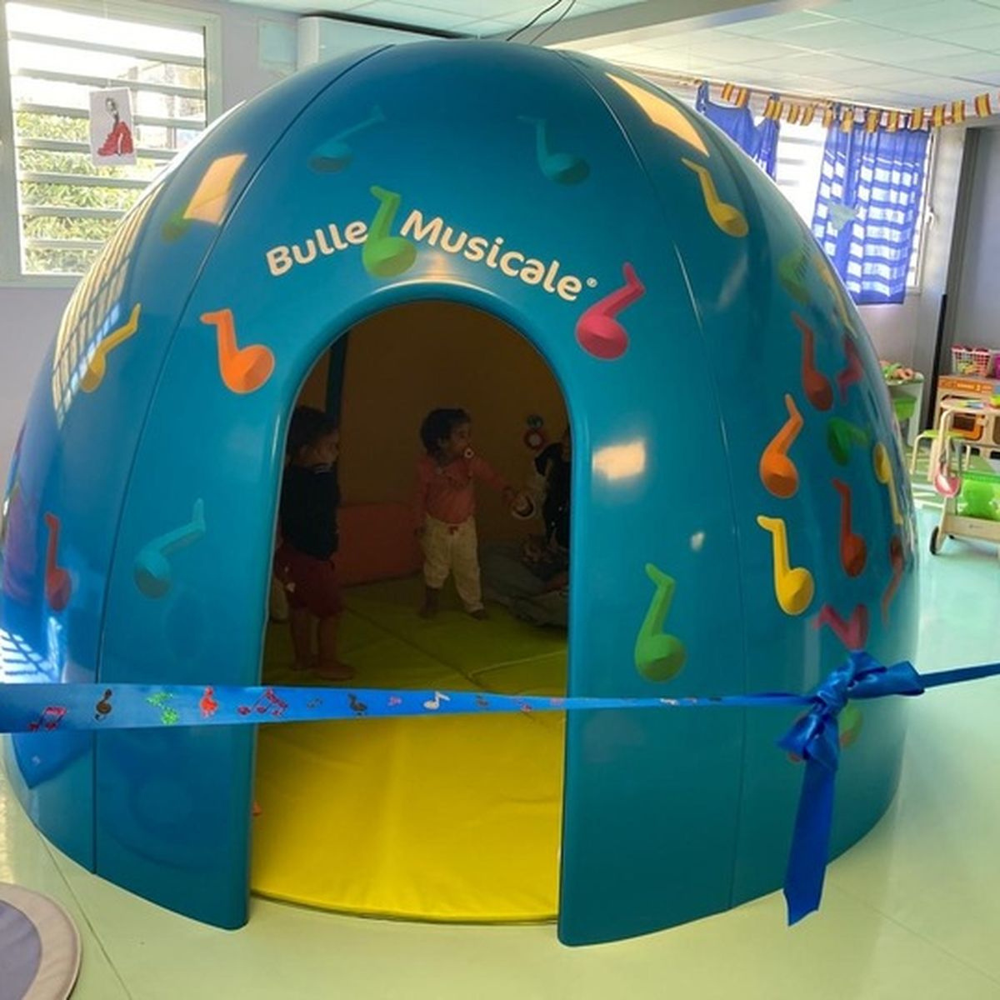
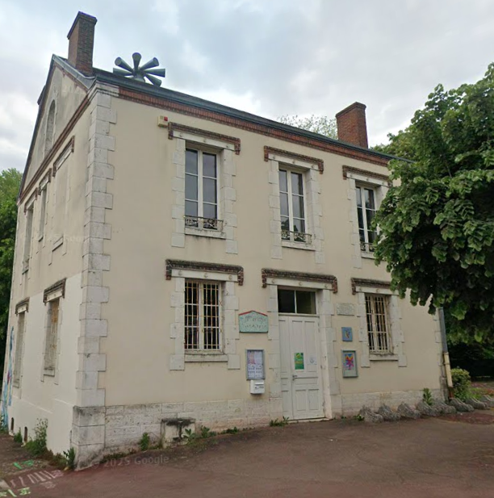
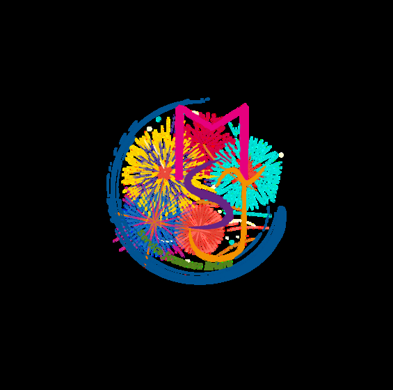
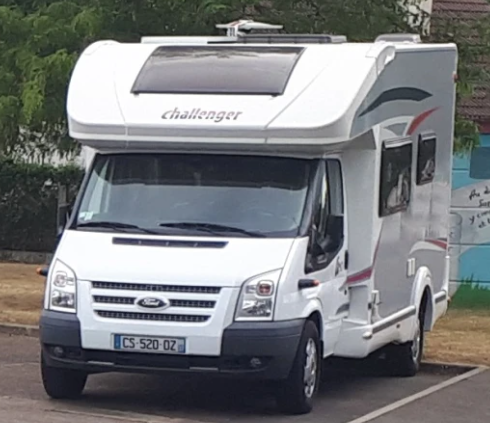
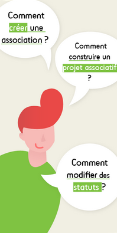

Des interlocuteurs clés
Mairies
Adressez-vous à votre commune pour les inscriptions dans les écoles, la restauration scolaire, l'accueil de loisirs ou l'inscription sur la liste électorale.
Communauté de communes Berry Loire Puisaye
42 rue des Prés Gris, 45250 BRIARE
📞 02 38 37 03 84
📧 [email protected]
🌐 www.cc-berryloirepuisaye.fr

Partenaires institutionnels

CAF du Loiret
Caisse d'Allocations Familiales du Loiret
2 place Saint Charles
45946 ORLÉANS Cedex 9
📞 3230
🌐 www.caf.fr

MSA Beauce Cœur de Loire
Mutualité Sociale Agricole
5 rue Chanzy
28037 CHARTRES Cedex
📞 02 37 99 99 99
🌐 https://bcl.msa.fr
Agence Départementale des Solidarités
Service de proximité du Département du Loiret
Accompagnement personnalisé
📞 02 38 25 45 45
🌐 www.loiret.fr

L'arrivée d'un enfant
"Chaque parent vient au monde en même temps que son premier enfant." - Ernst Kramer
Démarches avant l'arrivée de l'enfant
État civil et droits
• Reconnaissance de l'enfant par les parents (couples non mariés)
• Choix du nom de famille
• Se renseigner auprès de la CAF et de la MSA pour les primes de naissance
Santé
• S'inscrire à la maternité le plus tôt possible
• Faire sa déclaration de grossesse (avant la fin du 3e mois)
• Se renseigner sur les remboursements et examens obligatoires
Emploi
• Déclarer sa grossesse à son employeur
• S'informer sur le congé maternité et paternité
Mode de garde
• Commencer les démarches pour trouver un mode de garde dès l'annonce de la grossesse
Accompagnement périnatal



Maternité la plus proche
Hôpital de Gien
Centre Hospitalier du Giennois
Rue Wiltzer, 45500 GIEN
📞 02 38 67 61 00
Protection Maternelle et Infantile (PMI)
Accompagnement médico-social, consultations gratuites
10 rue Jean Mermoz, 45500 GIEN
📞 02 38 05 61 61
La sage-femme de PMI vous accompagne gratuitement pendant et après la grossesse
Sage-femme libérale
Patricia Philippart
Maison de Santé François Rabelais
24 Rue du Glacis
CHÂTILLON-SUR-LOIRE
📞 02 38 31 25 85
Doulas
MVB Doula
Marjorie Vatan-Bagryianik
BRIARE
📞 06 42 21 42 28
Hera Doula
Victoire Jacquot
CHÂTILLON-SUR-LOIRE
📞 06 26 07 54 63
Le cabinet, espace Ressources
Briare
Activités parents-enfants, ateliers bien-être


Petite enfance (0-5 ans)
"Il faut tout un village pour élever un enfant." - Proverbe africain
"J'avance à mon propre rythme et je développe toutes mes facultés en même temps : pour moi, tout est langage, corps, jeu, expérience. J'ai besoin que l'on me parle, de temps et d'espace pour jouer librement et pour exercer mes multiples capacités" - Principe n°2 de la Charte nationale pour l'accueil du jeune enfant
Accueil collectif
Le territoire dispose de deux structures d'accueil collectif labélisées "éveil et signes" avec un agrément délivré par la PMI. Elles accueillent des enfants âgés de 10 semaines à 4 ans révolus.


Multi-accueil Briare "La Ribambelle"
30 places réparties en 2 sections
12 bébés/moyens + 18 moyens/grands
3 mois - 4 ans
Pôle Petite Enfance
39, avenue Yver Bapterosses, Briare
📞 02 38 31 38 62
Lun-Ven : 7h30-18h30
📧 [email protected]
Multi-accueil Châtillon-sur-Loire "L'Arc-en-Ciel"
16 places (âge mélangé)
3 mois - 4 ans
Centre Médico-social
1, rue de la Boyaudière, Châtillon-sur-Loire
📞 02 38 31 15 25
Lun-Ven : 7h00-18h00
📧 [email protected]
Maison d'Assistantes Maternelles (MAM)
MAM "Rayons de Soleil" - La Bussière
Le territoire dispose d'une MAM (Maison d'Assistantes Maternelles) associative sur la commune de La Bussière.
Deux assistantes maternelles agréées par la PMI vous accueillent du lundi au vendredi dans un local refait à neuf et adapté à un petit groupe d'enfants. Le regroupement des assistantes maternelles agréées permet de proposer un accueil collectif, des activités d'éveil et préparer les enfants à la vie en collectivité tout en respectant leur rythme.
📍 Adresse : 11, route d'Escrignelles, 45230 LA BUSSIÈRE
👥 Contacts :
Nathalie Depardieu : 📞 06 50 15 35 75
Julie Aufrère : 📞 06 59 76 57 09
📧 rayonsdesoleil11re@gmail.com
Guichet Unique de la Petite Enfance
Accompagnement individualisé pour votre recherche d'un mode d'accueil
Permanence Briare
Mardi et jeudi de 13h30 à 17h00
Mercredi de 9h00 à 12h30
Pôle Petite Enfance
39, avenue Yver Bapterosses
02 38 36 78 73
Permanence Châtillon-sur-Loire
Lundi et vendredi de 13h30 à 16h30
Centre Médico-social
1, rue de la Boyaudière
02 38 37 23 74
Relais Petite Enfance (RPE)
Orientation, information et animation pour les parents et les assistants maternels
Permanence Briare
Mardi au jeudi de 13h30 à 17h30
Pôle Petite Enfance
39, avenue Yver Bapterosses
02 38 36 78 73
Permanence Châtillon-sur-Loire
Lundi et vendredi de 13h30 à 16h30
Centre Médico-social
1, rue de la Boyaudière
02 38 37 23 74
Le RPE vous accompagne dans la recherche d'assistants maternels agréés
Liste disponible sur demande, sur www.cc-berryloirepuisaye.fr et sur www.monenfant.fr
La Marelle - Lieu d'accueil enfants-parents (LAEP)
Un espace convivial et ludique pour les enfants de moins de 6 ans accompagnés d'un parent ou d'un adulte référent. Gratuit, sans inscription, anonyme.
Tous les mercredis de 9h15 à 11h45
au Pôle Petite Enfance à Briare
Tous les mercredis de 15h00 à 17h30
à la salle des Fêtes d'Ouzouër-sur-Trézée
Tous les jeudis de 15h00 à 17h30
au Centre médico-social à Châtillon-sur-Loire
📧 [email protected] - 📞 02 38 36 78 73
PMI - Consultations et ateliers
Consultations médicales et de puériculture GRATUITES
Au Centre Médico-social de Briare (6 rue des Grands Jardins)
• Consultation médicale : 1er lundi de 9h00 à 17h00 et 3ème lundi du mois de 9h00 à 13h00
• Permanence de puéricultrice : 2ème vendredi de 9h00 à 11h30
• 4ème vendredi de 9h00 à 11h30 à la Maison Médicale de Bonny-sur-Loire
📞 Pour prendre rendez-vous : 02 38 05 23 61
Atelier manipulation enfants-parents (GRATUIT)
Pour les enfants de 1 à 3 ans
Activités de manipulation : sable magique, semoule, terre, fleurs, eau, feuilles...
Tous les 2e vendredis du mois de 9h30 à 11h30
Au Pôle Petite enfance - 39 avenue Yver Bapterosses, Briare
📞 06 23 59 73 28
La Bulle Musicale
Espace sensoriel unique où la musique devient un terrain d'exploration pour les tout-petits
Pour les enfants de moins de 7 ans - GRATUIT
Mercredis de 9h15 à 11h45
Pôle Petite Enfance - 39, avenue Yver Bapterosses, Briare
📞 02 38 36 78 73

Enfance (3-11 ans)
"L'important c'est qu'un enfant puisse toujours dire ce dont il a envie, mais pas toujours le faire." - Françoise Dolto, pédiatre, psychanalyste
Scolarité
La Communauté de Communes Berry Loire Puisaye réunit 2 collèges (Briare et Châtillon-sur-Loire), 13 écoles publiques et une école privée, accueillant les élèves de la petite section au CM2.
Écoles du territoire

Autry-le-Châtel
Maternelle et élémentaire
14 rue de l'École (élémentaire)
route de Châtillon (maternelle)
📞 02 38 36 82 62 - 02 38 36 81 88
Beaulieu-sur-Loire
Maternelle et élémentaire
15 rue de Châtillon (élémentaire)
17 rue de Châtillon (maternelle)
📞 02.19.00.49.86 - 02.38.35.85.35
Ousson-sur-Loire
Maternelle et élémentaire
11 rue de l'abreuvoi (élémentaire)
2 bis rue des marronnier (maternelle)
📞 02 38 31 00 51
Briare - École Marcel Gaime
Maternelle
place Saint Roch
📞 02 38 31 25 85
Briare - École du Centre
Élémentaire
3 square Foch
📞 02 38 31 26 49
Briare - École Gustave Eiffel
Maternelle et élémentaire
7, rue de l'Espérance
📞 02 38 31 25 34
Briare - École Sainte-Anne
Maternelle et élémentaire (privée)
5, rue des Grands Jardins
📞 02 38 31 26 48

Bonny-sur-Loire
Maternelle et élémentaire
2 avenue de la Gare
📞 02 38 31 63 57
Châtillon-sur-Loire
Maternelle et élémentaire
place du Champ de foire
📞 02 38 31 40 74
Ouzouër-sur-Trézée
Maternelle et élémentaire
14 rue de la Flamandière (élémentaire)
1 rue du Stade (maternelle)
📞 02 38 31 97 47 / 02 38 31 92 89
RPI et SIIS
RPI Cernoy-en-Berry / Pierrefitte-ès-Bois
• Cernoy-en-Berry : Maternelle, 5 rue d'Autry - 02 38 31 01 00
• Pierrefitte-ès-Bois : Élémentaire, 7 rue de la Mairie - 02 38 31 08 13
SIIS Adon / La Bussière
• Adon : 13 route de la Bussière - 02 38 35 94 69
• La Bussière : 1 rue de Briare - 02 38 35 90 68
CLAS - Contrat Local d'Accompagnement à la Scolarité
Gratuit et ouvert à tous, de l'école élémentaire au lycée
Bonny-sur-Loire
École élémentaire et EVS Bee Mobile
2 avenue de la Gare
📞 02 38 31 63 57
Un accompagnement pour aider votre enfant à mieux réussir à l'école et un soutien pour les parents dans le suivi scolaire.
Accueils de loisirs
Accueil de loisirs Briare
3-11 ans
École Jean Bégault, Briare
📞 02 38 31 24 88 / 07 57 40 10 20
Mercredis + vacances : 7h30-18h30
📧 [email protected]
Accueil de loisirs Châtillon-sur-Loire
3-11 ans
École des Marguerites
📞 02 38 31 43 53 / 07 57 40 10 21
Mercredis + vacances : 7h30-18h30
📧 [email protected]
Autry-le-Châtel
En juillet
8 rue de la Mairie
📞 02 38 36 80 59
Beaulieu-sur-Loire
Les Crayons de couleurs
Association Familles Rurales
15 route de Châtillon
📞 02 38 05 03 84 / 06 70 02 16 12
Bonny-sur-Loire
avenue de la gare
📞 02 38 29 59 00
Mercredis et petites vacances
La Bussière
1 route de Briare
📞 02 38 35 90 68
Mercredis et 1ère semaine des petites vacances
Centre social Saint-Martin
Briare
📞 02 38 38 50 47
Mercredis et vacances scolaires
Accueils périscolaires
Matin et soir dans les écoles - Informations en mairie
Étude surveillée
École Jean Bégault - Briare
Lun-Mar-Jeu-Ven : 16h30-17h30
📞 02 38 37 03 84
Transports scolaires
[email protected]
📞 02 38 25 48 26


Adolescence & Jeunesse (11-25 ans)





Structures d'accueil
Culture Ados (Bee'Mobile)
10-18 ans, itinérant
📞 07 57 40 10 28
Mer 14h-18h, Sam (2/mois), vacances 10h-18h
Adhésion : 15€/an
Maison Saint-Jean (Briare)
6e-17 ans
49 Boulevard Buyser
📞 02 38 37 16 64 / 07 64 75 48 98
Mercredis + vacances
Maison des Adolescents (AMARA 45)
11-25 ans - Soutien santé mentale
📞 07 85 76 64 75
📧 [email protected]
Gratuit, confidentiel, anonyme
Mission Locale de Gien
16-25 ans : emploi, formation, orientation
30 rue Paul Bert, Gien
📞 02 38 67 25 62
📧 [email protected]
Scolarité secondaire
Collège Auguste-Birot (Briare)
Rue du Château d'Eau
📞 02 38 31 20 09
Collège Bernard-Giraudeau (Châtillon-sur-Loire)
Route d'Assay
📞 02 38 31 42 49
Collège Pierre-de-Coubertin (Beaulieu)
📞 02 38 05 03 84
City stades et skate-parks
Équipements sportifs disponibles à Briare, Châtillon-sur-Loire, Bonny-sur-Loire, Ousson-sur-Loire

Parentalité
"Il n'y a pas de parent parfait, pas plus que de parentalité parfaite !" - Isabelle Filliozat


Aide Éducative à Domicile (AED)
Accompagnement des parents et/ou enfants par des travailleurs sociaux
Contact ADS Gien : 02 38 05 23 49
Service d'Accompagnement Éducatif à la Parentalité (SDAEP)
Accompagnement personnalisé pour les parents
📞 02 38 55 50 10
📧 [email protected]
Espace de vie sociale Bee'Mobile
Ateliers parents-enfants, cafés des parents, sorties familiales
📞 07 57 40 10 28
Mercredis, jeudis, vendredis
Programme d'Animations Familiales (PAF)
Ateliers gratuits mensuels parents-enfants
📧 [email protected]
📞 02 38 05 18 07
Groupe d'échanges entre parents
Temps d'échanges conviviaux (4 fois par an)
Multi-accueil de Briare et Châtillon-sur-Loire
Service d'Intervention Sociale CAF
Accompagnement lors d'événements familiaux
📞 02 38 51 50 42 / 02 38 51 77 42
📧 [email protected]

Loisirs & Culture
Bibliothèques
Réseau de bibliothèques sur le territoire
Programmation culturelle régulière
Office de Tourisme
Informations touristiques et animations
Briare, Châtillon-sur-Loire
Ludothèques
Ludotm'obile : ludothèque itinérante
Jeux et animations pour tous âges
Micro-Folie Briare
Musée numérique et espace culturel
Collections des plus grands musées
Maison des Pays
Patrimoine et histoire locale
Expositions et visites
Clubs sportifs
Football, tennis, judo, danse, gymnastique...
Nombreuses associations sportives

Vivre ensemble

Guid'asso
Dispositif de l'État géré par la Ligue de l'enseignement pour accompagner les associations
Formations gratuites tout au long de l'année
Espace Initiatives Habitants
Proposez et mettez en œuvre des projets collectifs
Projet en cours : jardin partagé à Bonny-sur-Loire
Permanence numérique

Aide à l'utilisation d'un ordinateur, réseaux sociaux, démarches administratives
Service itinérant sur l'ensemble des communes
📞 07 57 40 10 28
Accès aux droits & Accompagnement
"La liberté c'est le respect des droits de chacun ; l'ordre c'est le respect des droits de tous." - Mirabeau
Réseau France Services
Maison France Services - Bonny-sur-Loire
1 Place Beaupin Lagier
📞 02 38 05 18 74
Mar-Ven : 9h-12h30 / 14h-17h30
Espace Service Public (itinérant)
📞 02 38 05 18 03
Rendez-vous au siège de la CC ou dans votre commune
Agence Départementale des Solidarités
Travailleurs sociaux sur rendez-vous
10 rue Jean Mermoz, 45500 GIEN
📞 02 38 05 23 49
Permanences dans plusieurs communes
CIDFF (Centre d'Information sur les Droits des Femmes et des Familles)
31 avenue Louis-Maurice-Chautemps, 45200 MONTARGIS
📞 02 38 77 02 33
Permanences à Gien
Droit, lutte contre les violences, parentalité
Pôle Ressources Handicap 45
Accompagnement inclusion des enfants à besoins particuliers
📞 06 31 54 70 00
📧 [email protected]
Service gratuit
Autres ressources
- MSA : Prestations d'action sociale, accompagnement familial (📞 02 37 99 99 99)
- CAF : Allocations familiales, aides au logement, accompagnement (📞 3230)
- URSSAF Pajemploi : Pour les parents employeurs (📞 0 806 807 253)